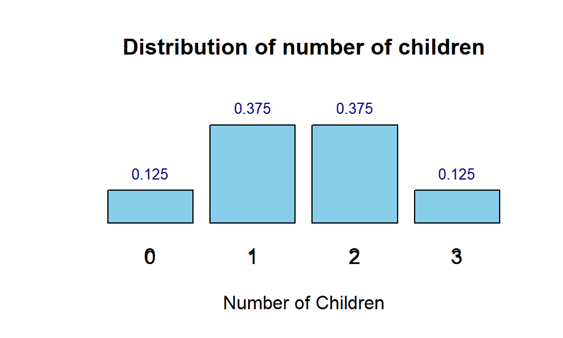
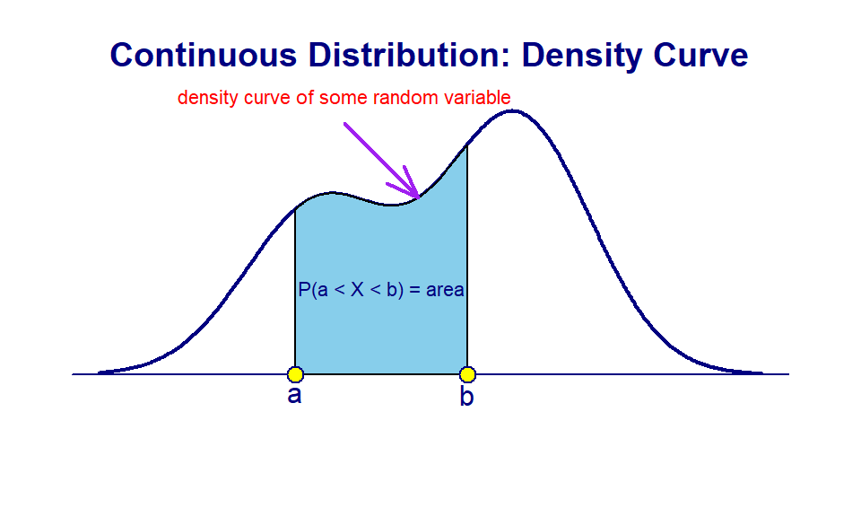
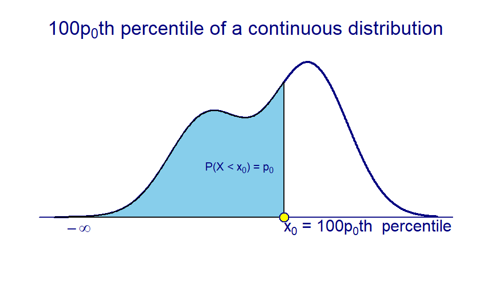
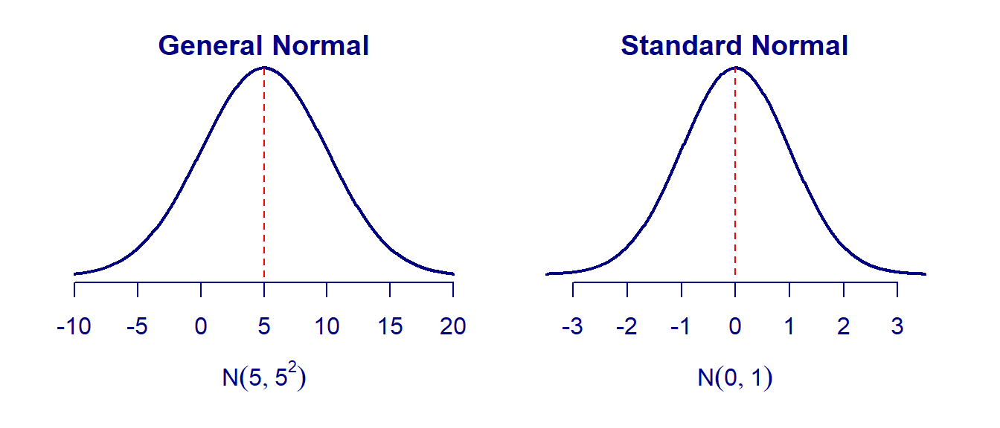
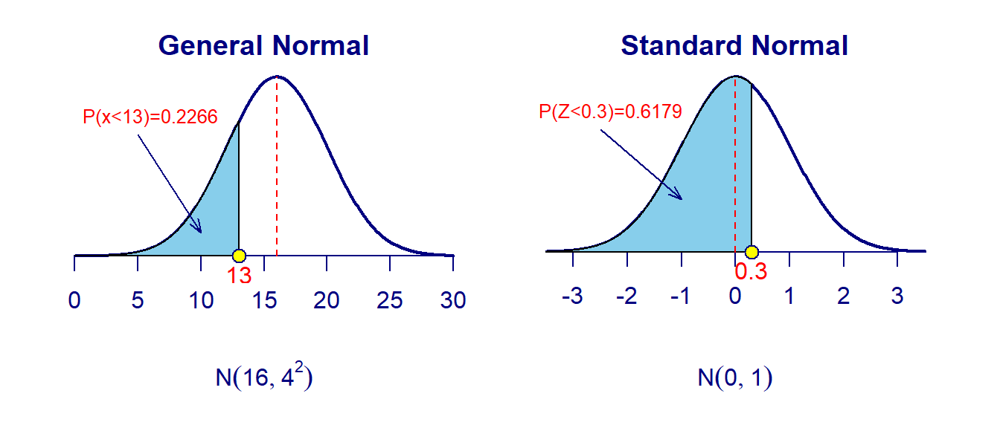
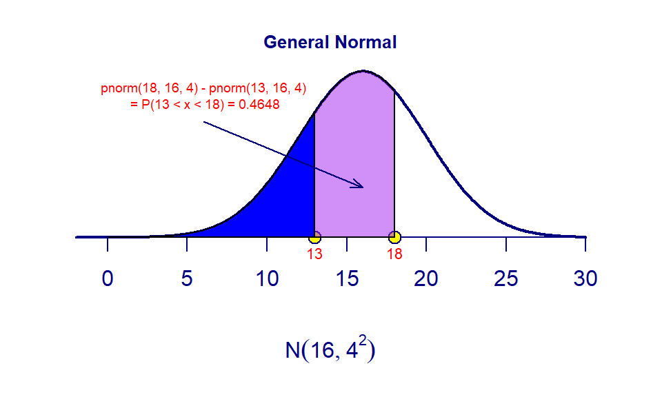
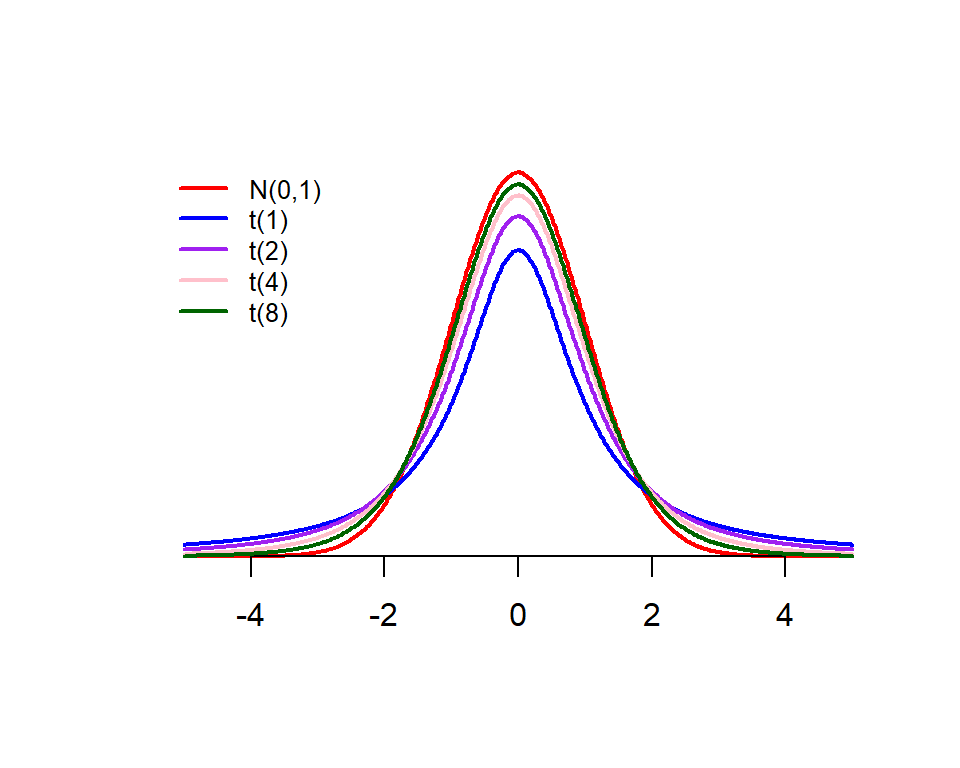
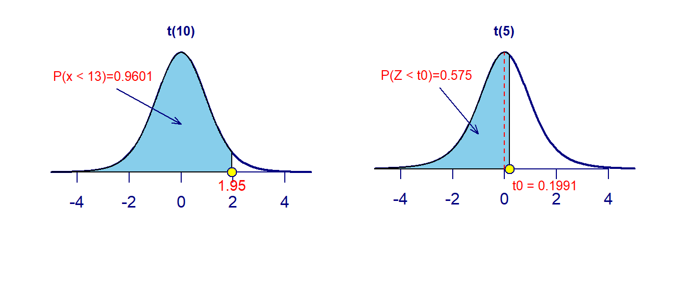

Topic 5 Concepts of Probability Distributions
In this chapter, we provide a non-technical description of random variables and their corresponding probability distributions.
5.1 Concepts of random variables
A random variable is a variable and its value is dependent on chance. What is the difference between a “regular” variable we learned from middle school and a random variable?
Example 1: Let \(x\) be a variable in the equation \(3x +4 = 8\). \(x\) is unknown before you solve for it from the equation. Most importantly, it is a fixed value although it is unknown.
Example 2: Let \(Y\) be the height of the WCU student population. \(Y\) is unknown before you measure the height of a student from this population. However, which student is selected to measure his/her height is dependent on the chance!
We can see from examples 1 and 2 that \(x\) and \(Y\) are variables. \(x\) is a “regular” variable and \(Y\) is a random variable!
Because the value of a random variable is dependent on the chance, we need additional mathematical tools to characterize the chance - probability distribution. This will be described in a non-technical manner in the next section.
5.2 Types of random variables
There are basic types of random variables: discrete and continuous random variables.
Discrete random variables: A random variable is said to be discrete if its value is obtained by counting. A discrete random variable may have either finite or infinite distinct values.
Example 3: Coin Flipping Experiment - Consider flipping an unfair coin (like the ones in the left panel of Figure 1) 10 times. Let \(X=\) the number of heads observed. \(X\) is a discrete random variable since it can take finite values (11 distinct values): 0, 1, 2, …, 10. Further, it can only take more than 11 distinct values since the unfair coin was flipped 10 times! Moreover, \(X\) can never be 2.7! It is discrete!
Example 4: Quadrat Sampling (right panel of Figure 1) - Consider estimating the total number of dandelions in a field. We know or we can measure the area of the field. The area of the quadrat is fixed. We can throw the quadrat randomly to the different regions in the field multiple times and count the number of dandelions in the squared plots sampled. Since the ratio of the sampled area and the total area of the field is equal to the ratio of the total number of dandelions in the sampled area and the total number of dandelions in the field. We then can solve the equation for the estimated total number of dandelions in the field. Now, let \(Y\) be the number of dandelions inside the quadrat in each sampled region. Clearly, \(Y\) is discrete. Is \(Y\) finite? Technically speaking, the number of dandelions in the quadrat cannot be infinite no matter where it is placed. However, unlike \(X\) in Example 3 which is naturally capped by 11, no cap can be placed on \(Y\). Theoretically speaking, \(Y\) is infinite!
Figure 5.1: Left: unfair coins. Right: quadrat for ecology sampling - estimating the number of dandelions in a field.
Continuous random variables A random variable is continuous if its value is obtained by measuring.
- Example 5: Let \(Y\) be the pH of arterial plasma (i.e., the acidity of the blood) of people of a population. \(Y\) is a typical continuous random variable. It has uncountably many values between 0 and 14. It is continuous since any value between any selected pHs could be the pH of a person in the population.
5.3 Concepts of probability distributions
We first briefly describe the concept of probability and then outline the probability distributions of random variables.
5.3.1 Concepts of probability
Before introducing the definition of probability, we list the following concepts.
(Statistical) Experiment - a process that produces well-defined outcomes. For example, consider an experiment of flipping a fair coin, the possible outcomes of this experiment are {heads, tails}.
Sample Space - The set of all possible outcomes is called sample space. The sample space of the above coin-toss example is S = {heads, tails}.
- Example 6: Consider an experiment of flipping a fair coin sequentially three times. We use T to denote tails and H for heads. The sample space of this experiment is given by S = {TTT, TTH, THT, HTT, HHH, HHT, HTH, THH} which can be explained by the following figure.
Figure 5.2: Sample space of the experiment of flipping a coin three times.
Event - a subset of sample space. Two extreme events are the impossible event (i.e., the subset is empty) and the sure event (i.e., the subset is equal to the sample space).
- Example 7: We will define a few events based on the experiment in Example 6 in the following.
- E1 = {observing at least 2 heads} = {HHH, HTH, THH, HHT}.
- E2 = {observing exactly one heads} = {HTT, THT, TTH}.
- E3 = {observing 5 heads} = {} = empty set = impossible event.
- E4 = {observing at one heads OR one tails} = S = sure event.
- Example 8: We still use the experiment in Example 6 with sample space S = {TTT, TTH, THT, HTT, HHH, HHT, HTH, THH}. Define \(Y =\) the number of heads observed in the experiment. We now define Events based on the value of random variable \(Y\).
- E.0 = {Y=0} = {TTT}.
- E.1 = {Y=1} = {TTH, THT, HTT}.
- E.2 = {Y=2} = {THH, HTH, HHT}.
- E.3 = {Y=1} = {HHH}.
- Example 7: We will define a few events based on the experiment in Example 6 in the following.
Definitions of probability - Two technical definitions of probability measure the chance of occurrence of an event.
Classical probability (based on equally likely outcome): P(E) = (# outcomes in E)/(# outcomes in S).
- Example 9: The experiment in Example 6 is an equally likely outcome experiment. Based on the above definition, we can calculate the probability of the event in Example 7:
- P(E1) = #E1/#S = 4/8 = 1/2.
- P(E2) = #E2/#S = 3/8.
- P(E3) = #E3/#S = 0/8 = 0. That is, an impossible event has a probability of 0.
- P(E4) = #E4/#S = #S/#S = 1. That is, a sure event has probability 1.
- Example 9: The experiment in Example 6 is an equally likely outcome experiment. Based on the above definition, we can calculate the probability of the event in Example 7:
Relative frequency approximation - If an event is defined based on an unequally likely experiment, we need to repeat the experiment multiple times to observe the number of occurrences and then use the relative frequency to approximate the probability of the event. This definition is used in most practical applications.
- Example 10: Chronic arsenic toxicity, which is due to low-concentration exposure over a long period of time, impairs the same organs and tissues and is a threat to public health. The following map shows the distribution of people with arsenic levels > 10 \(\mu g/L\) by US counties. As an example, Maine is one of the few states with a high level of arsenic. Let’s consider a remote northern Maine community where no public water system is available, the drinking water is from private wells. What is the probability that a long-term resident of the community has an arsenic level of more than 10 \(\mu g/L\)? Apparently, that probability is NOT 0.5 (i.e., this is not an equally likely outcome experiment). We survey many residents to measure the arsenic level for each selected resident and record whether the arsenic level is higher than 10 \(\mu g/L\). The desired probability is approximated by the relative frequency of residents with an arsenic level higher than 10 \(\mu g/L\).
Figure 5.3: Distribution of people with arsenic level > 10 ug/L by US counties
5.4 Probability distribution of random variables
The probability distribution of a population (or random variable) contains all information in the population (random variable). The primary questions we need to answer frequently about the distributions.
Finding probabilities: For any given two values, say \(x_1\) and \(x_2\), (including one or both of the extreme values), we can find the probability \(P(x_1 < X < x_2)\).
Finding quantiles (specific values of the random variable): For any value \(x\) (including one of the extreme values) and a probability, say \(p_0\), of a well-defined event, we can find the specific value of \(Y\), say \(x_0\) that was used to define the valid event, from the equation \(P(x < X <x_0) = p_0\) or \(P(x_0 < X <x) = p_0\).
There are types of random variables: discrete random variables and continuous random variables. The probability distribution of a random variable provides a way to find the probability of an event defined by a value or a set of values of the random variable.
5.4.1 Discrete probability distribution
The probability distribution of a discrete random variable is a description of the relative frequencies of the corresponding district values.
- Example 11: Refer to Example 9, Let \(Y\) be the number of children. \(Y\) has 4 possible values: 0, 1, 2, 3. Then the probability of each distinct value of \(Y\) is summarized in the following table.
| Y | Prob |
|---|---|
| 0 | 0.125 |
| 1 | 0.375 |
| 2 | 0.375 |
| 3 | 0.125 |
With the above table, we can find the probability of all events defined based on the values of random variable \(Y\). The above table is called the probability distribution table. The following graphic representation of the probability distribution table is called the probability distribution histogram.

For example, with the above table, we can two types of questions.
- Finding probabilities
- \(P(Y < 2) = P(0< X < 2) = P(Y=0) + P(Y = 1) = 0.125 + 0.375 = 0.5\).
- \(P(Y > 2) = P(2 < X \le 3) = P(Y = 3) = 0.125\).
- Finding quantiles
- \(P(0< X < x_0) = 0.5 \to x_0 = 1.\)
- \(P(1<X<x_0) = 0.375 \to x_0 = 0.375.\)
Caution: The above two types of questions can be complicated in discrete distribution. This blog post explains this complexity in some detail. We will NOT use the discrete distribution directly in this class, instead, we use will the normal distribution (in the next section).
Remark: We can see from the above examples that the definition of an event associated with a discrete random variable is a value or set of values.
5.4.2 Continuous probability distribution
A continuous random variable has uncountably many distinct values. That is, for any two distinct values of the continuous random variable, no matter how close they are, there are still uncountably many values in between. because this property, an event associated with a continuous random variable is defined to be an interval or the union of some intervals of the values of the random variable.

Unlike in the case of the discrete random variable in which the height of the vertical bar in the probability histogram is defined to be the probability of observing that corresponding value, for any continuous random variable, we define the probability of an event that is defined based on an interval \([a, b]\) to be
$P(a < X < b) = $ the area of the region defined by \(a, b\) and the density curve (see the above figure).
As a special case, \(P(X = c) = 0\). Moreover, \(P(X=c_1, c_2, c_3,\cdots )=0\). That is, the probability of observing countably many values of a continuous random variable is ALWAYS ZERO!.
Two Basic Types of Questions: finding probabilities and quantiles.
Finding probabilities: for any given two values (including possibly one of or both \(-\infty\) and \(\infty\)), say \(a, b\), then \(P(a<X<b)=\) area of the shaded region as shown in the above Figure. As a special case, if \(a = b\), then \(P(X = a) = 0\).
Finding quantiles: for a given value, say \(x\), of \(X\) (possibly including \(\infty\) or \(-\infty\)) and a probability, say \(p_0\), we can find the other value \(x_0\) from \(P(x < X < x_0) = p_0\) if (\(x \le x_0\)). As a special case, if the given value is \(\infty\) and \(-\infty\) (both are not valid values of \(X\)!), then \(x_0\) that satisfies \(P(X < x_0) = P(-\infty<X<x_0) = p_0\) is called the \(100p_0^{th}\) quantile (see the following figure).

In the next section, we will introduce several distributions of special continuous random variables.
5.5 Special Continuous Distributions
Four distributions will be used in this course. We introduce the first two of them: normal distribution and t-distribution.
5.5.1 Normal Distribution
The general normal distribution has a bell-shaped distribution as shown in the following figure. A normal distribution is uniquely determined by its mean and variance. We usually use notation \(N(\mu, \sigma^2)\), where \(\mu\) and \(\sigma^2\) are the mean and variance of the normal distribution. When \(\mu=0\) and \(\sigma^2 =1\), the normal distribution \(N(0,1)\) is called the standard normal distribution. The

- Two Types of Questions in Normal Distribution are related to the left-tail area and quantile. R has two functions for finding left-tail area and quantile for any given normal distribution.
pnorm(quantile, mean, sd)
# The above function finds the left-tail area for a given quantile.
# mu = mean, sd = standard deviation.
qnorm(left.tail.prob, mean, sd)
# The above function finds the quantile for a given left-tail area.
# mu = mean, sd = standard deviation.- Example 12: We find the left-tail area of general normal distributions \(X \to N(16, 4^2)\). \(P(X < 13) = ?\)
## [1] 0.2266*Example 13: We find the left-tail area of the standard normal distributions \(X \to N(0, 1)\). \(P(X < 0.3) = ?\)
## [1] 0.6179We next give a graphical representation of the tail area in Example 12 and Example 13.

- Example 14: Let \(X \to N(16, 4^2)\). Find \(P(13 < X <18) = ?\)
The following R code calculates the probability. Note that
P(X<18) = pnorm(18, 16, 4)andP(X<13) = pnorm(13, 16, 4). ThereforeP(13 < X < 18) = pnorm(18, 16, 4) - pnorm(13, 16, 4). The probability is the area of the purple region. See the following Figure.
## [1] 0.4648
- Example 15: Consider the standard normal distribution \(N(0,1)\). Find \(z_0\) if \(P(Z > z_0) = 0.2345\). The answer is given in the following R code:
qnorm(0.2345, 0, 1)or simplyqnorm(0.2345). The latter form does not specifymean=andsd=since the defaultmean = 0andsd = 1.
## [1] -0.7241071That is, \(23.45\%\) of the values in the standard normal population are less than or equal to \(-0.7241\) and \(23.45\%\) are greater than or equal to \(-0.7241\).
5.5.2 t distribution
The t distribution is symmetric with respect to the vertical axis with a mean of 0. The shape is ALWAYS flatter than the standard normal distribution. The shape of a t distribution is uniquely determined by the degrees of freedom. The following chart describes the relationship between the standard normal and t distributions.

R has two functions for finding left-tail area (also called tail probability) and quantile:
pt(quantile, df) # left-tail probability (left-tail area)
qt(left-tail-area, df) # quantile- Example 16: Answer the following questions about t-distributions.
- Consider \(t(10)\), t-distribution with 10 degrees of freedom. \(P(T<1.95) = ?\)
- Consider \(t(5)\), t-distribution with 10 degrees of freedom. What is \(t_0\) if \(P(T<t_0) = 0.575\)?
# problem 1
problem01 = pt(1.95, df=10)
# Problem 2
problem02 = qt(0.575, df = 5)
## display the two result
cbind(problem01 = problem01, problem02 = problem02)## problem01 problem02
## [1,] 0.9601258 0.1991374The above results are also reflected in the following figures.

5.6 Summary
In this module, we introduced some basic concepts of probability, random variables, and distributions of random variables. Left-tail probability and quantile of normal and t distributions are the most important quantities that will be used in this course. We also introduced R functions to calculate left-tail the probability and the quantile of normal and t distributions. These R functions are summarized in the following.
# normal distribution
pnorm(quantile, mean, sd) # for the left-tail probability of normal distribution
qnorm(left.tail.prob, mean, sd) # for the quantile of normal distribution
# t-distribution
pt(quantile, df) # for the left-tail probability of normal distribution
qt(left.tail.prob, df) # for the quantile of t distribution5.6.1 Numerical Examples Based on Normal and t Distributions
Example 17: In the United States, males between the ages of 40 and 49 eat on average 103.1 g of fat every day with a standard deviation of 4.32 g (“What we eat,” 2012). Assume that the amount of fat a person eats is normally distributed.
- State the random variable.
- Find the probability that a man in the age group of 40-49 in the U.S. eats more than 110 g of fat every day.
- Find the probability that a man in the age group of 40-49 in the U.S. eats less than 93 g of fat every day.
- Find the probability that a man in the age group of 40-49 in the U.S. eats less than 65 g of fat every day.
- If you found a man in the age group of 40-49 in the U.S. who says he eats less than 65 g of fat every day, would you believe him? Why or why not?
- What daily fat level do 5% of all men in the age group of 40-49 in the U.S. eat more than?
Solution: We use R to find the answers to the above questions.
- \(Y\) = amount of fat a person eats every day. Calculations of problems 2 - 6 are given in the following R code chunk.
p2 = 1- pnorm(110, mean =103.1, sd = 4.32) # 1-left-tail-prob = right-tail-prob
p3 = pnorm(93, mean =103.1, sd = 4.32) # left-tail probability
p4 = pnorm(65, mean =103.1, sd = 4.32) # left-tail probability
p5 = pnorm(65, mean =103.1, sd = 4.32) # left-tail probability
p6 = qnorm(1-0.05, mean =103.1, sd = 4.32) # quantile
ans = cbind(problem2 = round(p2,4), problem3 = round(p3,4),
problem4 = round(p4,4), problem5 = round(p5,4),
problem6= p6)
row.names(ans) ="prob or quantile"
kable(t(ans))| prob or quantile | |
|---|---|
| problem2 | 0.0551 |
| problem3 | 0.0097 |
| problem4 | 0.0000 |
| problem5 | 0.0000 |
| problem6 | 110.2058 |
- The probability that a man in the age group of 40-49 in the U.S. eats more than 110 g of fat every day is 5.51%.
- The probability that a man in the age group of 40-49 in the U.S. eats less than 93 g of fat every day is 0.997%.
- The probability that a man in the age group of 40-49 in the U.S. eats less than 65 g of fat every day is close to 0.00%.
- I will not believe a man in the age group of 40-49 in the U.S. who says he eats less than 65 g of fat every day because the chance of eating less than 65 g in that age group is almost 0.00%.
- 5% of all men in the age group of 40-49 in the U.S. eat more than 110.2058 g.
Example 18: The mean cholesterol levels of women aged 45-59 in Ghana, Nigeria, and Seychelles is 5.1 mmol/l and the standard deviation is 1.0 mmol/l (Lawes, Hoorn, Law & Rodgers, 2004). Assume that cholesterol levels are normally distributed.
- State the random variable.
- Find the probability that a woman aged 45-59 in Ghana, Nigeria, or Seychelles has a cholesterol level above 6.2 mmol/l (considered a high level).
- Find the probability that a woman aged 45-59 in Ghana, Nigeria, or Seychelles has a cholesterol level below 5.2 mmol/l (considered a normal level).
- Find the probability that a woman aged 45-59 in Ghana, Nigeria, or Seychelles has a cholesterol level between 5.2 and 6.2 mmol/l (considered borderline high).
- If you found a woman aged 45-59 in Ghana, Nigeria, or Seychelles having a cholesterol level above 6.2 mmol/l, what could you conclude?
- What value do 5% of all women ages 45-59 in Ghana, Nigeria, or Seychelles have a cholesterol level less than?
Solution
- Random variable \(Y\) = mean cholesterol levels of women aged 45-59 in Ghana, Nigeria, and Seychelles.
The calculation of problems 2 - 6 is given in the following R code chunk.
p2.2 = 1- pnorm(6.2, mean = 5.1, sd = 1) # 1-left-tail-prob = right-tail-prob
p2.3 = pnorm(5.2, mean = 5.1, sd = 1) # left-tail probability
p2.4 = pnorm(6.2, mean = 5.1, sd = 1) - pnorm(5.2, mean = 5.1, sd = 1)
p2.5 = 1 -pnorm(6.2, mean = 5.1, sd = 1) # left-tail probability
p2.6 = qnorm(0.05, mean = 5.1, sd = 1) # quantile
ans.p2 = cbind(problem2 = round(p2.2,4), problem3 = round(p2.3,4),
problem4 = round(p2.4,4), problem5 = round(p2.5,4),
problem6 = p2.6)
row.names(ans.p2) ="prob or quantile"
kable(t(ans.p2))| prob or quantile | |
|---|---|
| problem2 | 0.135700 |
| problem3 | 0.539800 |
| problem4 | 0.324500 |
| problem5 | 0.135700 |
| problem6 | 3.455146 |
- The probability that a woman aged 45-59 in Ghana, Nigeria, or Seychelles has a cholesterol level above 6.2 mmol/l is 13.57%.
- Find the probability that a woman aged 45-59 in Ghana, Nigeria, or Seychelles has a cholesterol level below 5.2 mmol/l is 53.98%.
- Find the probability that a woman aged 45-59 in Ghana, Nigeria, or Seychelles has a cholesterol level between 5.2 and 6.2 mmol/l 32.45%.
- If a woman aged 45-59 in Ghana, Nigeria, or Seychelles has a cholesterol level above 6.2 mmol/l, he has a high cholesterol level.
- 5% of all women ages 45-59 in Ghana, Nigeria, or Seychelles have a cholesterol level of less than 3.455 mmol/l.
5.7 Assignment - Probability Distributions
We focus on the concepts of random variables and their corresponding distributions. Two basic types of questions are will face very often in this course are to find (1) left-tail probability (area under the density curve) and (2) quantile under given conditions for all continuous distributions. We present numerical examples of normal and t distributions in the last part of the class note. In this assignment, you will do problems similar to the last two examples. You can use the codes provided in the class note [HTML or PDF]. I also include RMD on the course web page but not required. In case some of you want to learn more advanced R coding, the source RMD is useful.
kable() function is in library {knitr}. If you have not installed this package on your computer, you will receive an error could not find function "kable" calls:. The following screenshot shows how to install a package on your computer.
Figure 5.4: Install Packages on computer.
This assignment focuses on the two types of questions using normal distributions. Please prepare an R Markdown document to complete the assignment.
- Problem 1
The size of fish is very important to commercial fishing. A study conducted in 2012 found the length of Atlantic cod caught in nets in Karlskrona to have a mean of 49.9 cm and a standard deviation of 3.74 cm (Ovegard, Berndt & Lunneryd, 2012). Assume the length of fish is normally distributed.
- State the random variable.
- Find the probability that an Atlantic cod has a length of less than 52 cm.
- Find the probability that an Atlantic cod has a length of more than 74 cm.
- Find the probability that an Atlantic cod has a length between 40.5 and 57.5 cm.
- If you found an Atlantic cod to have a length of more than 74 cm, what could you conclude?
- What length are 15% of all Atlantic cod longer than?
- Problem 2
The mean yearly rainfall in Sydney, Australia, is about 137 mm and the standard deviation is about 69 mm (“Annual maximums of,” 2013). Assume rainfall is normally distributed.
- State the random variable.
- Find the probability that the yearly rainfall is less than 100 mm.
- Find the probability that the yearly rainfall is more than 240 mm.
- Find the probability that the yearly rainfall is between 140 and 250 mm.
- If a year has a rainfall of less than 100mm, does that mean it is an unusually dry year? Why or why not?
- What rainfall amounts are 90% of all yearly rainfalls more than?